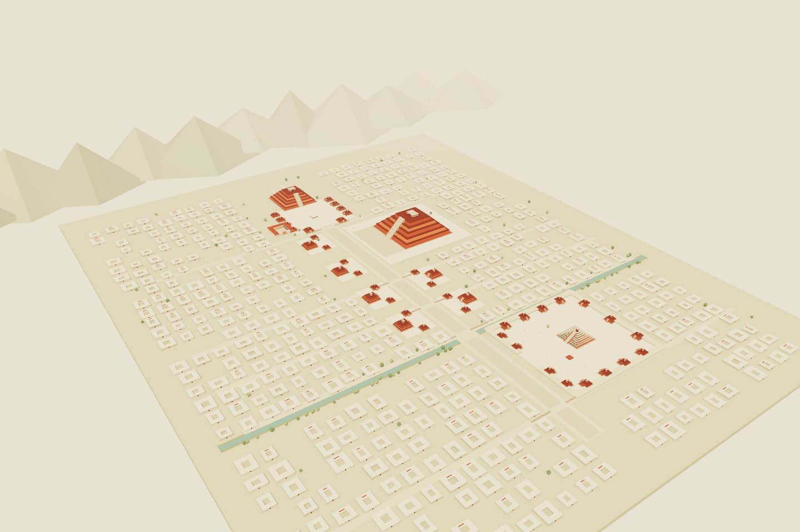

一次阅读之后
如果能走进
书里的地图呢？
翻阅《古墨西哥文明》时，两张古城复原地图带来了这个问题。于是，书页中的建筑、道路和广场，成为了一次可交互的空间实验。
作品保留插画般的色彩与概括的体量，让观察成为游览的一部分。它也为家庭一起探索历史提供一个起点：先看见，再提问，再寻找依据。
Ponghood 个人作品 · AI 辅助编程与内容整理
几何场景由代码生成 · 中文讲解为合成语音
参考书页未作为公开图片或贴图使用
古城漫游 / ANCIENT CITY ATLAS · 01
特奥蒂瓦坎，墨西哥中部高原。
沿大道看见城市的秩序，登上台阶，
换一个角度理解历史。
无需登录 · 手机可看沙盘与导览 · 电脑可自由漫游

两种节奏，同一座城
从羽蛇神神庙到月亮广场。跟随镜头，也可以随时停下来，自由观察。
02 / 探索找方向、换视点、辨别依据。六个活动，提供“探索”和“研究”两种深度。
一次阅读之后
翻阅《古墨西哥文明》时，两张古城复原地图带来了这个问题。于是，书页中的建筑、道路和广场，成为了一次可交互的空间实验。
作品保留插画般的色彩与概括的体量，让观察成为游览的一部分。它也为家庭一起探索历史提供一个起点：先看见，再提问，再寻找依据。
Ponghood 个人作品 · AI 辅助编程与内容整理
几何场景由代码生成 · 中文讲解为合成语音
参考书页未作为公开图片或贴图使用
出发前
手机：单指旋转，双指缩放与平移。
电脑：鼠标观察；进入漫游后 WASD 移动，空格跳跃，V 切换视角。
画面卡顿时，可在城内切换“轻量画质”。
主要布局与建筑形式参考官方资料。道路、间距和细节经过简化；配色、部分顶部建筑、居民与夜间氛围含艺术推演。它综合不同阶段的特征，不对应某一个确切年份。
UNESCO · 城市与复原依据 ↗INAH · 遗址资料 ↗阅读五站讲解文字 ↗